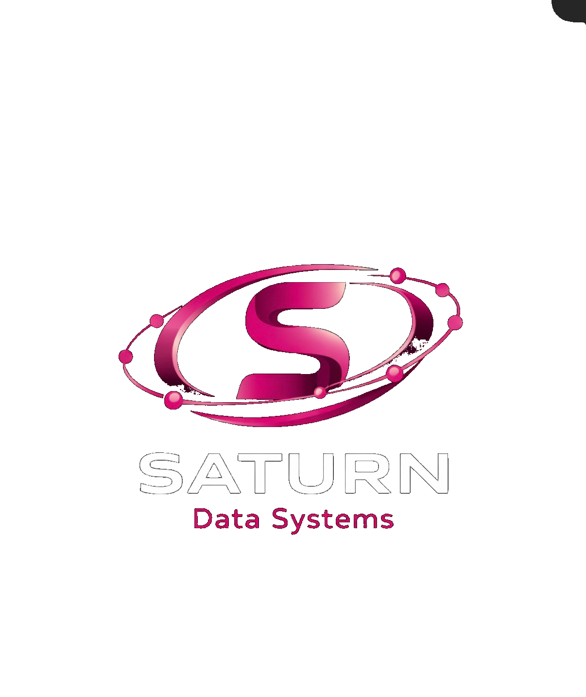

A household can understand the offer in seconds
$10 monthly, 5 Mbps down, 2 Mbps up, no cap counting, and no hidden conditions.

Saturn Data SystemsSaturn Data Systems | Connecting Liberia
Saturn brings a flat $10 monthly broadband plan to Monrovia households with 5 Mbps download, 2 Mbps upload, no data caps, Starlink backhaul, Wi-Fi 6 coverage, and support that feels local instead of distant.
A refined brand treatment, same Saturn mission
One honest plan, no data caps, no contract traps, and no bundle confusion.
Starlink backhaul, MikroTik routing, and Wi-Fi 6 outdoor access points.
Video calls, schoolwork, social media, streaming, and small-business use.
Local response first, with WhatsApp-friendly service once the public number is finalized.
Saturn still looks like Saturn here. The palette, spacing, and presentation are refined, but the core identity stays intact.
$10 monthly, 5 Mbps down, 2 Mbps up, no cap counting, and no hidden conditions.
Saturn explains the infrastructure plainly, which makes the brand feel more trustworthy.
Monrovia rollout, mobile money familiarity, and human support all stay front and center.
Plans and Pricing
The sample page had good information here. This redesign keeps that substance, but gives it a cleaner hierarchy so the plan feels premium instead of busy.
Reliable everyday broadband for streaming, voice calls, schoolwork, and routine business tasks.
MTN Mobile Money, Orange Money, or cash, with a month-to-month relationship and no contract.
Current public plan
Quality broadband for every Liberian household
Usable in short bursts, but expensive for a household that needs internet every day.
Higher effective cost and much more anxiety for customers trying to stay connected.
One clear monthly price, no data cap, and a message people can trust immediately.
What 5 Mbps Gets You
Saturn should explain outcomes, not just speeds. That is what helps people picture the service inside a real home.
Full-quality messaging, voice calls, and video calls for families and daily communication.
720p viewing that feels smooth enough for learning, entertainment, and family use.
Facebook, Instagram, and TikTok browsing, posting, and routine day-to-day use.
Gmail, attachments, research, and collaborative tools like Google Docs.
Product browsing, ordering, and digital payment workflows without counting megabytes.
Wikipedia, Khan Academy, online classes, and homework support for students at home.
WhatsApp Business, inventory checks, online communication, and practical admin tasks.
Two devices included at once, which fits many everyday household browsing patterns.
No cap counting, no surprise recharges, and a price that is easier to budget monthly.
Research, classes, email, and video resources all become more practical at home.
Messages, orders, browsing, and everyday digital coordination stay accessible and stable.
How the Network Works
This is one of Saturn's strongest credibility sections. It should feel confident, readable, and specific enough that people understand the engineering behind the promise.
Saturn brings internet into the network with Starlink, creating a strong upstream foundation before it is distributed locally.
The router manages credentials, device limits, speed profiles, and network visibility across the subscriber base.
Power-over-Ethernet helps keep rooftop and pole equipment simpler, neater, and easier to maintain.
Outdoor access points push coverage through the neighborhood with better capacity than an ad-hoc hotspot model.
Customers connect with their account details and use the service without watching a data balance disappear.
Enterprise routing helps protect the network from unauthorized access and routine abuse.
Subscriber access is organized cleanly so one household is not casually exposed to another.
Saturn presents itself as a licensed telecommunications operator in Liberia.
Support should feel local, reachable, and practical rather than outsourced and anonymous.
Coverage and Rollout
Saturn should be ambitious without pretending to cover the whole country on day one. Honesty here makes the brand more professional.
Start local, prove reliability, and expand neighborhood by neighborhood with visible demand.
Current service area focused on building reliable early coverage for 50 to 150 households.
Paynesville, Congo Town, and nearby demand-led zones become the clearest next move.
The national vision stays visible, but the communication remains grounded and credible.
About Saturn
Saturn exists because mobile data costs push real internet use out of reach for too many households. This is the story that makes the brand more than a tariff table.
In Liberia, 1 GB of mobile data can cost around $1.67. For a family trying to stay connected to school, business, relatives, and online services, that can quickly become $30, $40, or $50 a month.
Saturn Data Systems was built to answer that gap with a real broadband plan: technically serious, legally compliant, locally supported, and simple enough for a household to trust.
Operations, regulatory compliance, and community partnerships
Jesse brings the business and local relationship side of Saturn forward, helping the company earn trust through compliance, partnerships, and a Liberia-centered service approach.
Technical architecture and network design
Jero leads the network side of Saturn, from Starlink backhaul and MikroTik routing to Wi-Fi 6 deployment and the technical quality of the subscriber experience.
Frequently Asked Questions
Start by checking if your neighborhood sits inside the current coverage zone. Saturn can then confirm the plan, collect the first payment, and guide the activation process.
Yes. The offer is designed around unlimited monthly usage. Speed policies help the network stay fair, but the customer is not billed per gigabyte.
Video calls, 720p streaming, social media, Gmail, Google Docs, online learning, and ordinary browsing all fit naturally into the plan when the connection is stable.
Saturn is positioned around familiar payment channels: MTN Mobile Money, Orange Money, and cash where needed.
Support should feel direct and human. Saturn can present email, local response hours, and WhatsApp-based follow-up once the public number is finalized.
No long contract is highlighted here. Saturn is framed as a month-to-month service that earns loyalty through performance rather than paperwork.
Get Connected
This section now carries more of the sample site's substance, but in a structure that feels more professional and much easier to scan.
How To Start
Saturn confirms whether the address sits inside the current rollout zone.
Customers review the $10 offer and choose the most practical payment method.
Once approved, the account details and support process can be shared clearly.
The public WhatsApp number can be added here once finalized, without using a fake placeholder in the meantime.
Brand Promise
Affordable, quality internet for the people of Liberia. Building a connected nation, one household at a time.
Saturn remains Saturn: black, white, magenta, orbit energy, and a Liberia-first mission.
The site now feels calmer, more structured, and more credible without drifting into a different identity.
The founder story, support details, rollout plan, and technical explanations are all back in the experience.